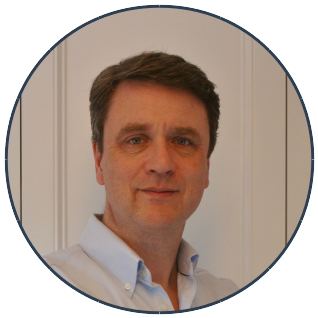
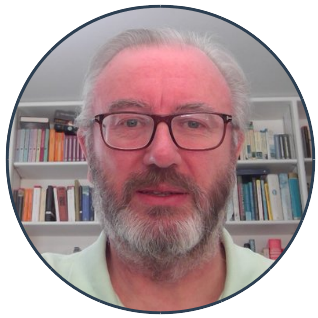
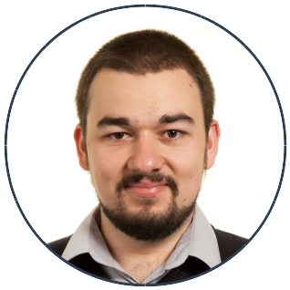
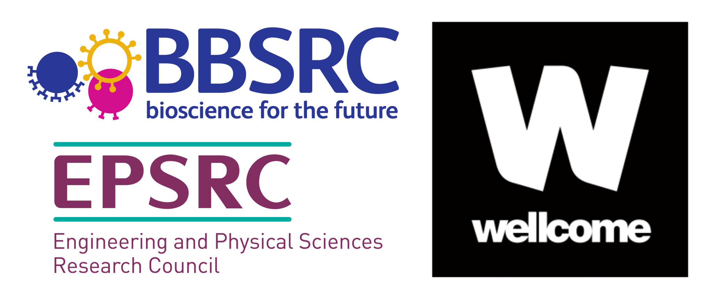

People
CHAP is developed by the labs of Professor Mark Sansom and Professor Stephen Tucker at the University of Oxford. In particular, the following people are involved:
|  | Professor Stephen Tucker received his undergraduate and graduate degrees in Biochemistry from the University of Oxford. He held a succession of research fellowships from the Welcome Trust and the Royal Society before becoming a Professor of Biophysics in 2015. |
|  | Professor Mark Sansom also studied Biochemistry in Oxford, where he is now the Head of Department and also the David Phillips Professor of Molecular Biophysics. |
|  | Gianni Klesse earned a Bachelor's degree in Physics from the University of Heidelberg, as well as a Master's degree in Computational Science from the University of Amsterdam. He is now working towards a DPhil degree at the Systems Biology Doctoral Training Centre of the University of Oxford, where he studies the behaviour of water in biological nanopores. |

|
Shanlin Rao completed her undergraduate MBioch degree at Hertford College, University of Oxford. She is now reading for a DPhil in Biochemistry, looking at hydrophobic gating of ion channels. |
Funding
The development of CHAP is supported by the following institutions:
